Memory Book
从陌生到有一点熟悉的九十多天
我想说很高兴认识你
2026.03.22
初次见面，请多关照啦
已经很久不看语音厅的我意外刷到你的直播，以为只会是路过，没想到不知不觉已经过了这么多天。
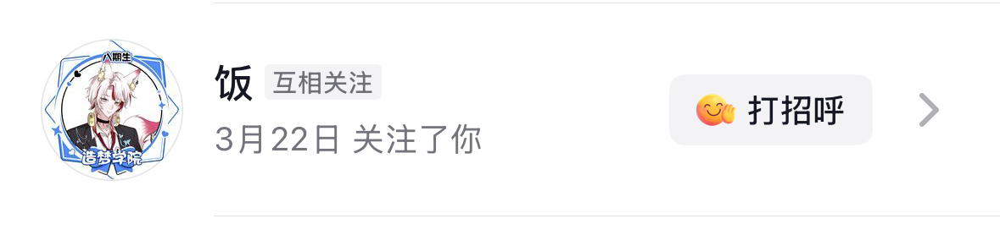
2026.03.25
第3天，因为抖音吞我亲密度，一怒之下开了个星守护，也成功来到了八级，进入了泡泡群。
人来人往，但我想总有一天我们也会发展成百人、千人大群的！
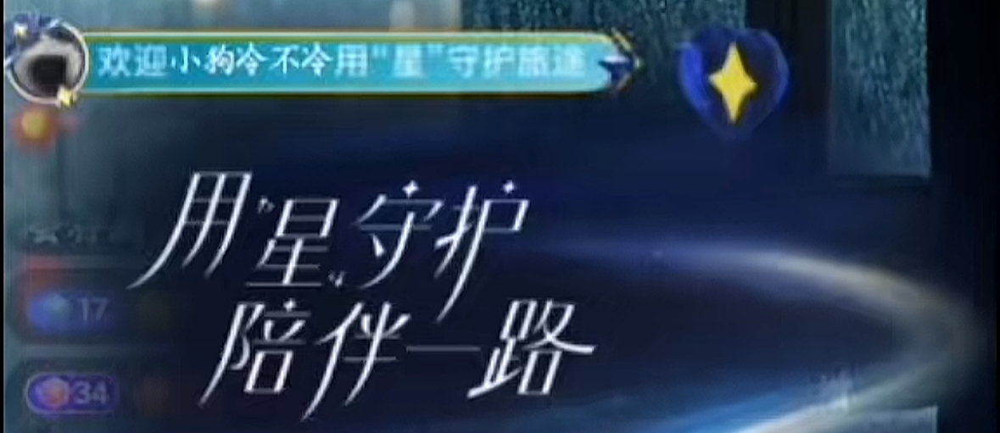
2026.03.28
十级啦，好像有变得更熟一点吗？
嗯，其实并没有。（其实刚认识不到一周）
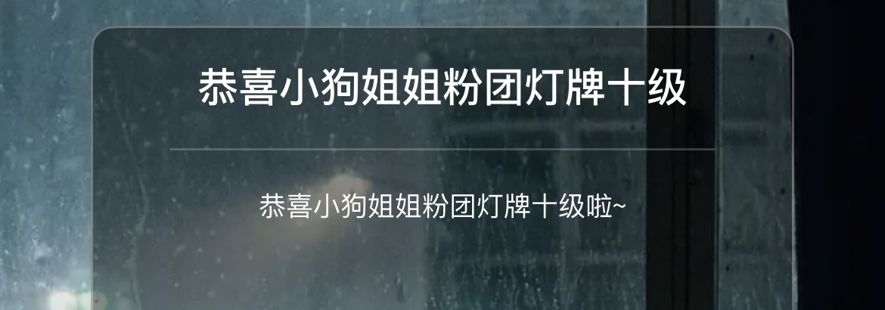
2026.04.15
我决定给你约一个头像。
没想到经饼干大师严肃指导后发展成了半个人设图，感谢饼干大师，小妹膜拜膜拜你。

2026.04.21
认识你的第30天！
卡了一个77777亲密度，也是为数不多卡成功的亲密度，开心之，因为7这个数字对我来说还挺特别的。
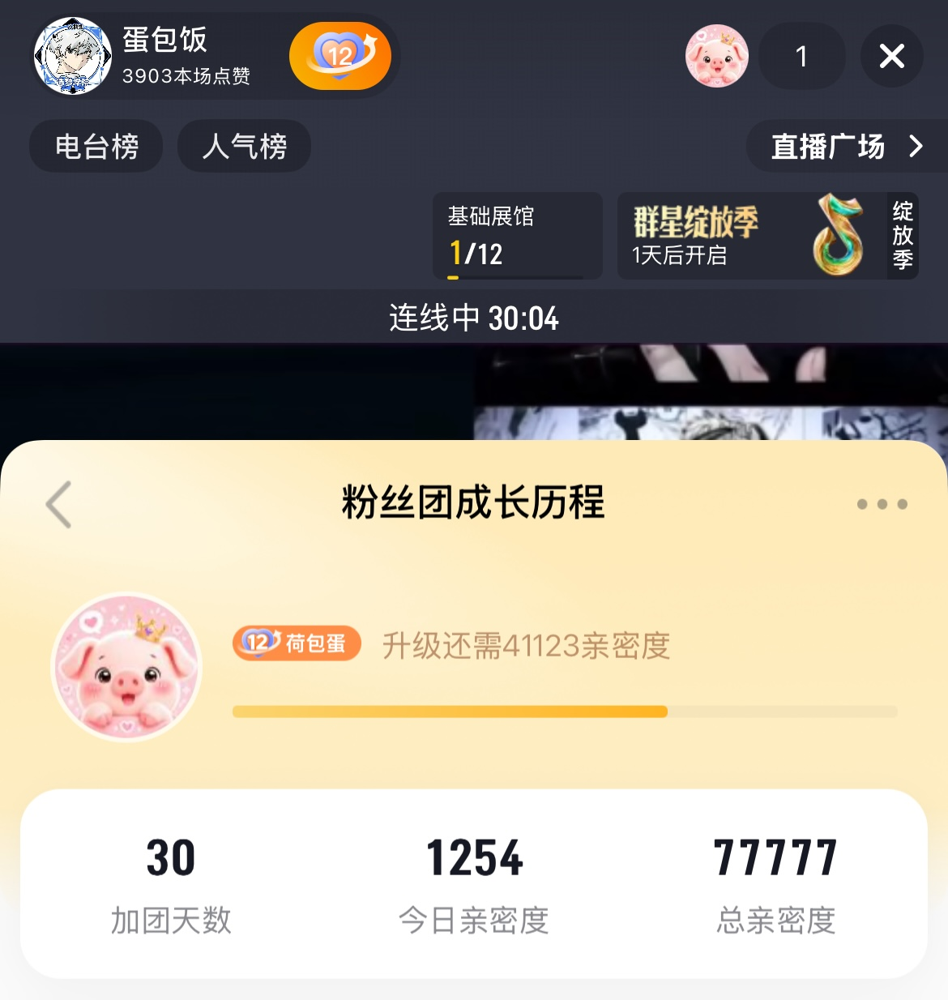
2026.05.10
认识你的第49天，十三级啦！
翻相册发现这天吃饭的餐厅里还挂着一个大大的洪崖洞的照片，巧之巧之

2026.05.12
人设图已出！
永远记得刚出的时候被萌晕的我们仨，再次感谢饼干大师！
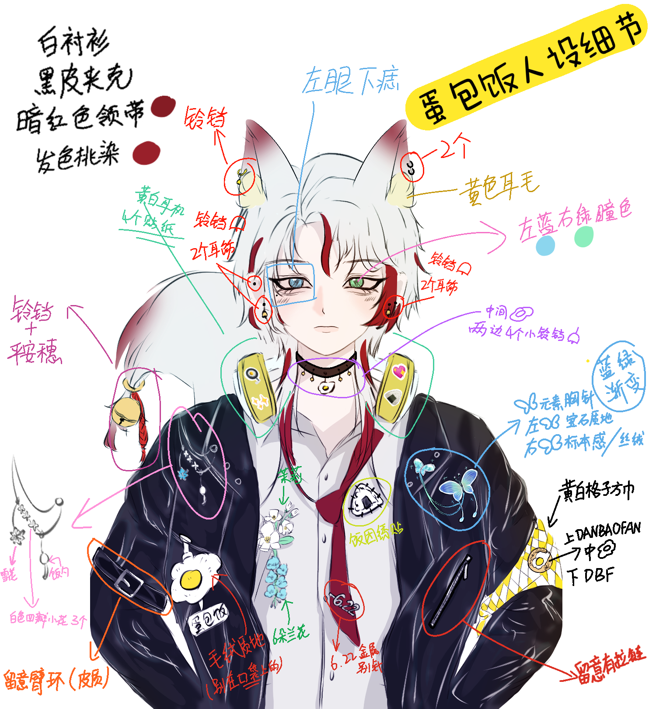
2026.05.15
表情包和柄图已出已出！
就是上面看萌，下面看萌，左边看萌，右边看萌，完全纯粹的萌物啊！
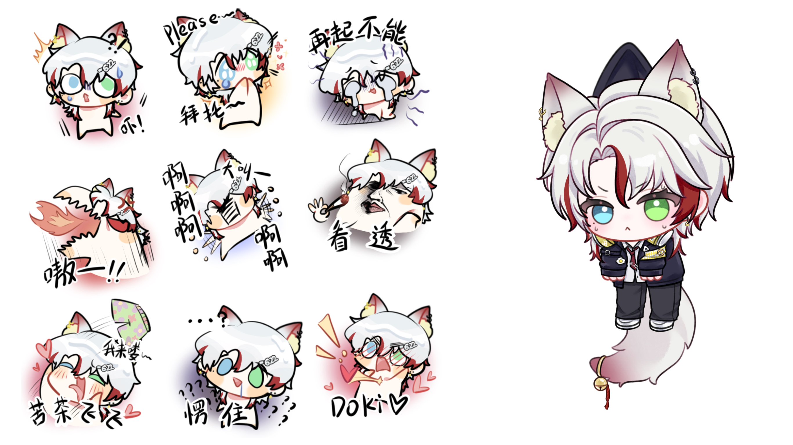
2026.05.18
半身图已出已出已出！
现在想起来，那会儿为了及时收图半夜定三个闹钟起来看消息，迷迷瞪瞪都没发现泪痣没画，还好先发给饼干看了一眼。
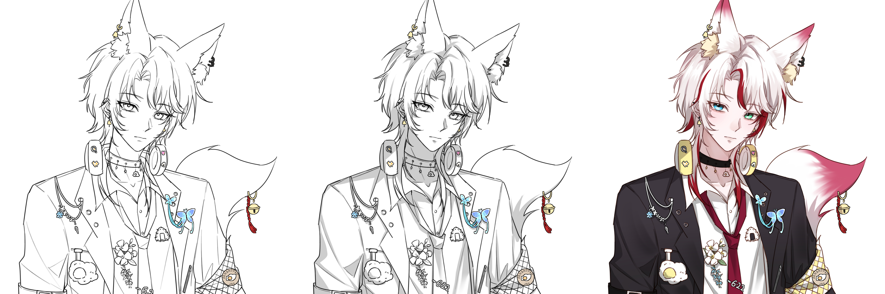
2026.05.20
第一次图片播，帅之帅之
原谅我只找到这张来自24号的图，只能假装一下了:/，还有！可恶的陪伴之旅，以后请对我好一点！

2026.05.22
爬山我爬爬爬。
人倒霉，蘑菇坏，箱子坏，山也坏。

2026.05.29
小幽灵萌。
咋这么可爱嘞。这么可爱啥意思。可爱成这样是何意味。意欲何为！

2026.05.31
认识你的第70天，14级啦！
现在有变得更熟一点吗？应该有吧。有吗？
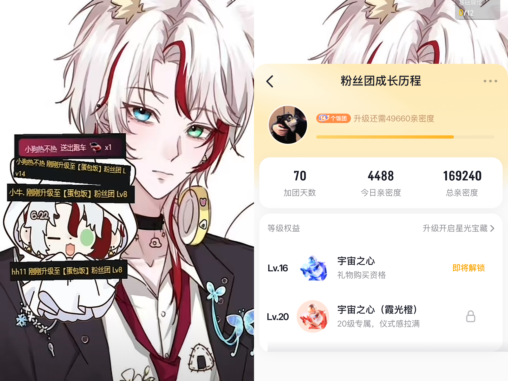
2026.06.06
星期六，一个很六的日子很六的我拼了两个很六的图。
没错我就是拼豆天才:>，请尽情膜拜猪猪大王吧！

2026.06.09和06.13
第80天和第83天。
开通了我的第四个星守护，解锁了我的19万和20万亲密度，卡亲密度这一块终于拿捏了！ 其实原本打算等生日再开的，但是那天心情有点不好，开完之后就好多了。
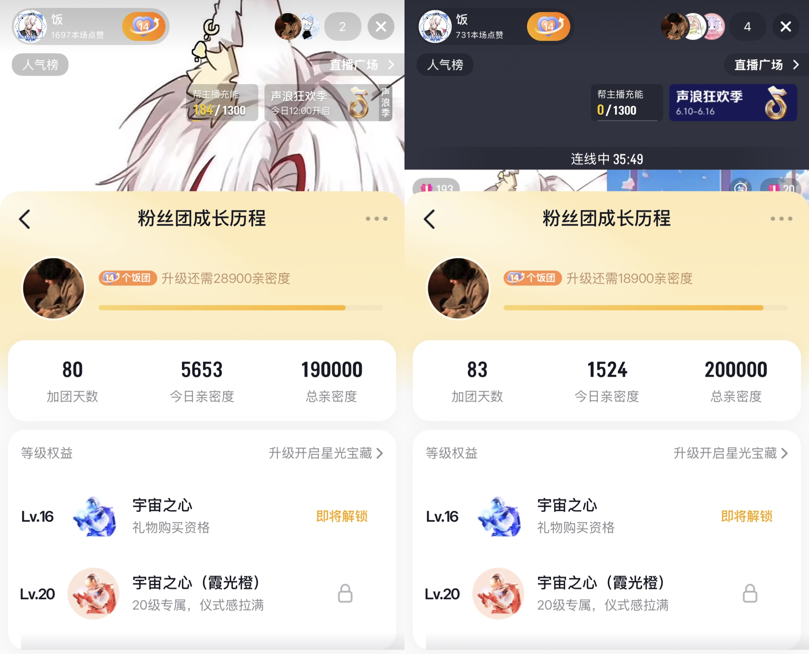
2026.06.19
第89天
亲密度卡的有点失败了，不过还好，已经无限接近生日啦！等着！
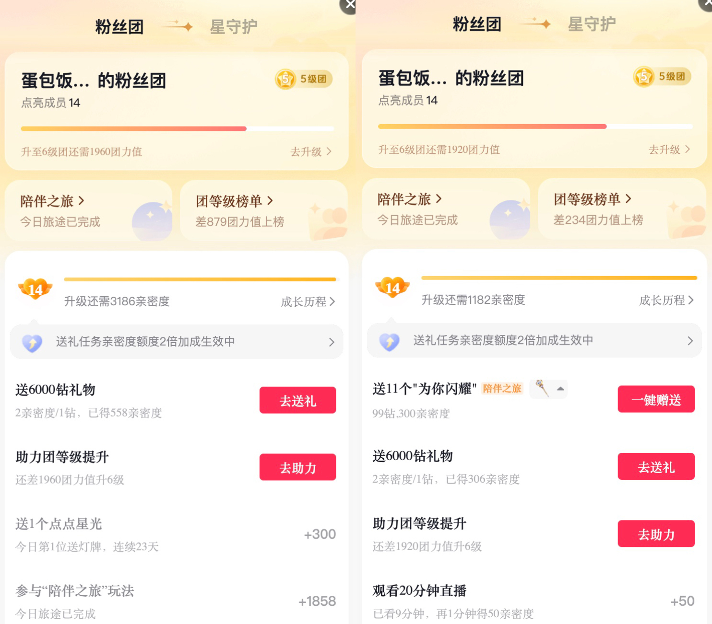
2026.06.21
第90天
登！！！！顶！！！！ 人幸运，蘑菇好，箱子好，山最好！

生日这天
时间过得真的很快。
生日快乐呀！
等到你看到这个网站的时候，我们应该已经认识90多天了，不知道这个生日礼物你是否会喜欢，甚至不知道这是否能算作一个生日礼物，更不知道你看这些的时候会是什么样的感受，希望不会太尴尬。
选择首歌的原因是，感觉这首歌好像比爱久见人心更适合生日一点。
下面的图片是我在测试网站是否顺利运行时显示的标题，不知道到时是否能正常显示，遂截图显示之！
小小蛋包饭，19岁生日快乐！
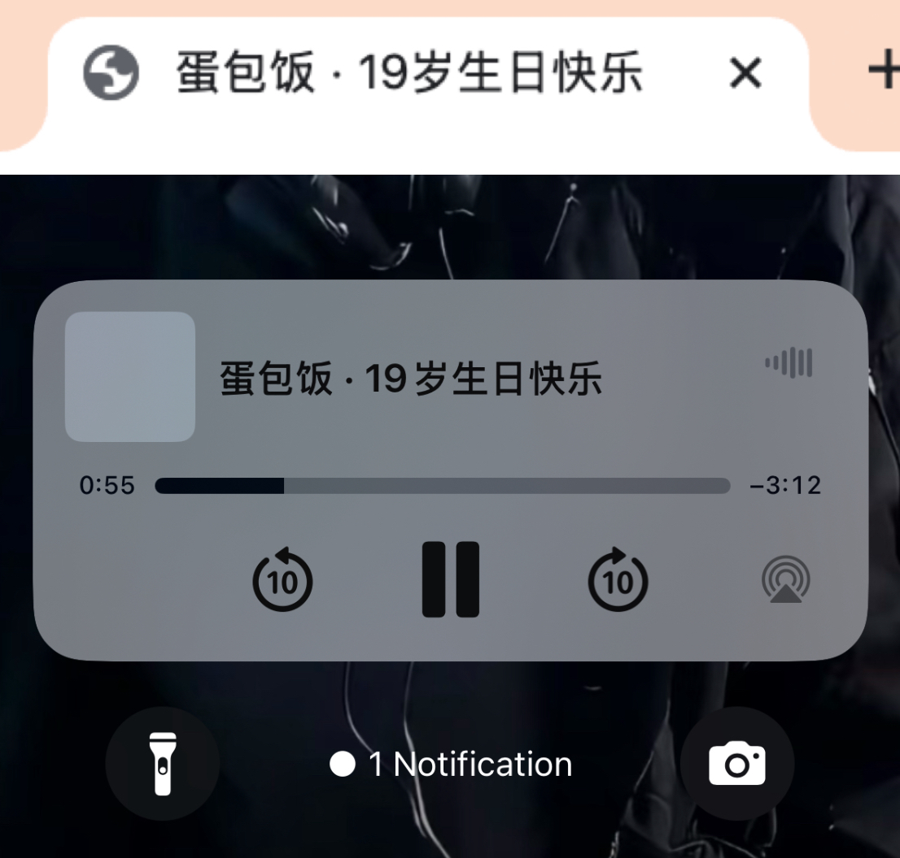
2026.06.07
决定做一个小网站的这天
突然就有一些话想说。 首先，是做这个网站的原因，其实很简单，就是在给你准备生日礼物的时候我正好在做一个公司的网站，然后就这样灵机一动。但最终成品出来之后我才忽然意识到这好像并不能被称之为一个礼物。 可惜等我意识到这一点的时候，离你的生日只剩下三天了。（不中不中）于是我就在送和不送之间反复纠结，最后秉持着做都做了的原则，我决定还是发给你看看，希望你觉得还不错。 （其实我在做这个网站的过程中有过另一个想法，现在我觉得那个形式可能更像一个给你的礼物，嗯，如果有机会实现的话。） 其次，关于那个真的能拿到手里的礼物。最开始想送你的礼物并不是这个，不过那个礼物和现在这个礼物的本质是一个东西，只是表现形式略有不同。 其实我下完单就有点后悔了，因为我觉得这两个东西放一起的时候大小方面有点搞笑，可惜下单前没意识到这一点，光顾着选好看点的了，sry。 但是言归正传，最终决定送你这个东西的原因是，我爸妈过生日的时候，我的习惯就是买一束花和一个蛋糕。 因为我觉得生日就是一定要有花和蛋糕才算。 就是不知道这个生日蛋糕和花你会不会喜欢，希望你喜欢吧，礼物请拆！ 拆了吗？会不会太mini以至于完全看不见在哪里。（忐忑之） 好了，从这里开始就是一些碎碎念啦。 亲爱的蛋包饭， 见字如面，时间真的过得很快。 一眨眼，我们居然已经认识九十多天了。 从陌生到好像有一点熟悉，我们用了多少天呢？做这个网站的时候我一直在想，到底是从哪一刻开始，我们好像开始变的有一点熟悉，但直到我做完这个礼物，我也没找到那个瞬间。 我记得刚认识的时候，你说你是巨蟹座，上升水瓶，生日在夏至的后一天，当时我就觉得哇塞，怎么会和我几乎截然相反，水瓶座，上升巨蟹，生日和大寒是同一天。天下怎有如此巧合之事！不兑，有问题。 就这样，因为这个小小巧合，很久没看过直播的我又开始看直播了。 做梦都没想到我会重新看语音厅，更没想到一看就看到了现在。 缘，妙不可言。 我其实是一个挺慢热的人。 很多时候、哪怕是认识了很久的人，我也会通过对方的正反馈，反反复复地去确认很多东西，然后再慢慢调整自己的边界。 有时候会觉得其实我们之间挺陌生的， 有时候又会觉得， 我们偶尔应该也算是同频的朋友吧？ 至少在抽象这一块。 聊天，打游戏，蛐蛐，还有一些莫名其妙的神经梗，嗯......怎么不算同频呢。 要是能重来，我还是会选择做一个诚实的善良的人。 我忏悔，我说青年音我能忍到1000斤都是骗人的，真碰到了我只会说谁家年猪没关住跑出来了。 好了，停止停止，不能再胡言乱语了。 认真的说，其实很高兴认识你。 我不是一个很擅长向别人承诺“永远”的人。 因为未来会发生什么，谁也不知道。 但是至少现在，至少这一刻。 我很开心，也很认真地在陪你走这一段路。 这是我陪你过的第一个生日。 如果还能有第二个，我将提前两个月把我没来得及实现的那个想法落实！ 十九岁是一个很特别的年纪。 对我来说， 十九岁，我感受到了太多的迷茫、低落、无助。 但迈入二十岁后再回头看的时候， 才发现其实幸福还是比痛苦多一点。 所以我想把这样的祝福送给你。 无论什么时候，因为什么事情而感到痛苦， 我都希望你最后的感觉是幸福。 希望你新的一岁里， 可以天天开心， 万事顺利。 希望你的愿望都成真， 幸运之神常伴左右。 希望你可以慢慢变成自己喜欢的大人， 变成自己最想成为的那个样子。 再次祝你十九岁生日快乐。 最后—— 祝你每天都感到幸福。 Best wishes， 猪酱
等一下
其实我还有一个问题，
一定要是周大福的金色吗？老凤祥的可以吗？
1 / 13